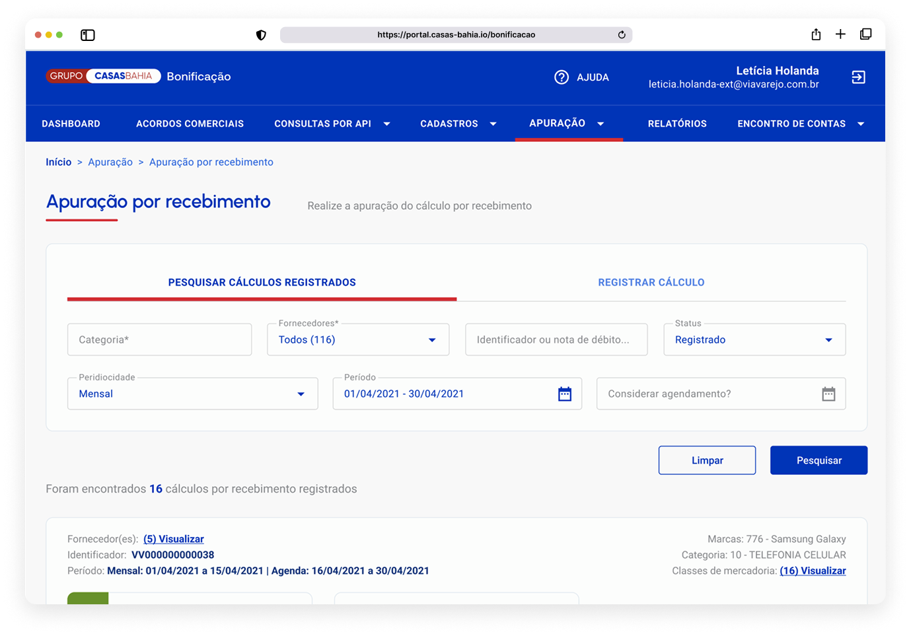

Não possui a senha? Entre em contato comigo no LinkedIn.
Julho de 2023
Redesenhei o processo de bonificação e devoluções dos produtos das Casas Bahia, antes feito manualmente em planilhas fora do sistema, sem rastreabilidade e gerando divergências de valores na casa dos milhões. A solução trouxe todo o fluxo para dentro da plataforma, tornando o sistema a fonte única de verdade e reduzindo drasticamente os erros.

Este discovery foi desenvolvido para atender os times comerciais do Grupo Casas Bahia que realizam acordos de bonificação. O objetivo era migrar um processo crítico de planilhas externas para uma plataforma interna automatizada.
Bonificações são acordos contratuais entre a Via e seus parceiros de negócio: incentivos e recompensas nas negociações com fornecedores para evoluir o relacionamento com a indústria. Os valores são lançados direto no resultado da Via.
Uma plataforma de bonificação já existia para controlar os acordos comerciais e oferecer visibilidade, confiabilidade e rastreabilidade dos cálculos. O problema estava no processo que acontecia fora dela.
Todo final de mês, os times comerciais precisavam realizar o fechamento e extrair planilhas com dados de devolução para gerar notas de débito dos fornecedores.
A apuração de recebimento consiste em verificar o valor que deve ser recebido na venda dos produtos, cruzando valores acordados com fornecedores, descontos, taxas e impostos.
O processo de análise de bonificações era feito manualmente, em planilhas fora do sistema, sem rastreabilidade, sem padronização, sem controle.
Os valores registrados nas notas não batiam com os dados da plataforma de bonificação. E ninguém sabia ao certo qual dos dois estava certo.
Erros nos repasses para fornecedores todo mês, sem rastreabilidade para identificar a origem da divergência.
O discovery partiu de uma solicitação do stakeholder: automatizar o processo interno de análise de bonificações. Antes de propor qualquer solução, precisávamos entender o processo real, não o processo documentado.
Mapear como a apuração de recebimento estava sendo feita na prática.
Identificar e documentar o canal adequado para extração das planilhas.
Propor uma solução de apuração dentro da plataforma de bonificação existente.
Os analistas utilizavam 2 canais adicionais além do canal correto para extrair as planilhas de recebimento.
Nenhum dos dois incluía todos os impostos e valores necessários, informados por padrão apenas no canal principal. Nenhum analista tinha documento ou orientação formal sobre qual canal usar.
Tínhamos duas direções possíveis:
Manter o processo atual e apenas documentar os canais corretos para extração das planilhas. Solução rápida, mas que não eliminaria a raiz do problema: o dado errado continuaria sendo extraído.
Redesenhar o processo dentro da plataforma de bonificação, descontinuando o uso das planilhas externas e tornando o sistema a fonte única de verdade.
Os erros não eram de atenção. Eram estruturais. Sem uma plataforma centralizada, qualquer documentação criada ficaria desatualizada e ignorada em semanas.
O trade-off foi escopo: priorizamos o fluxo crítico de fechamento mensal e deixamos funcionalidades secundárias para fases seguintes.
O processo era feito manualmente em planilha, onde os analistas clusterizavam todas as informações dos fornecedores e realizavam os cálculos dentro da própria planilha.
Agora os analistas possuem uma área na plataforma para realizar os cálculos de forma automática e fiel aos dados de devoluções dos fornecedores.
Os times de analistas realizam um único processo de devolução, tornando a jornada padronizada e mais fácil de ser acompanhada pela auditoria.
Eliminação dos erros causados pela extração de dados de canais incorretos. O impacto financeiro, na casa dos milhões, estava em processo de contabilização no momento da entrega.
Um único processo, rastreável e auditável, substituindo planilhas externas sem padronização.
Os valores financeiros de redução de erros estavam em processo de contabilização no momento da entrega. O impacto qualitativo foi imediato: um único processo, rastreável e auditável.